Lab 3: Time of Flight
Prelab
In this lab, we will become familiar with the VL53L1X ToF ranging sensor. According to the datasheet, its default address is 0x52.
If we want to use two ToF sensors simultaneously, such as A and B, to avoid address conflicts on the I2C bus, we can connect the XSHUT pin of B to a GPIO on the Artemis sensor. During setup, first pull the XSHUT pin low to uniquely address A, then modify A's address, and finally pull the XSHUT pin of B high. This way, both ToF sensors can work simultaneously.
After consideration, I decided to wire the system as shown in the diagram below, which will allow me to obtain distance data from the front and sides of the vehicle.
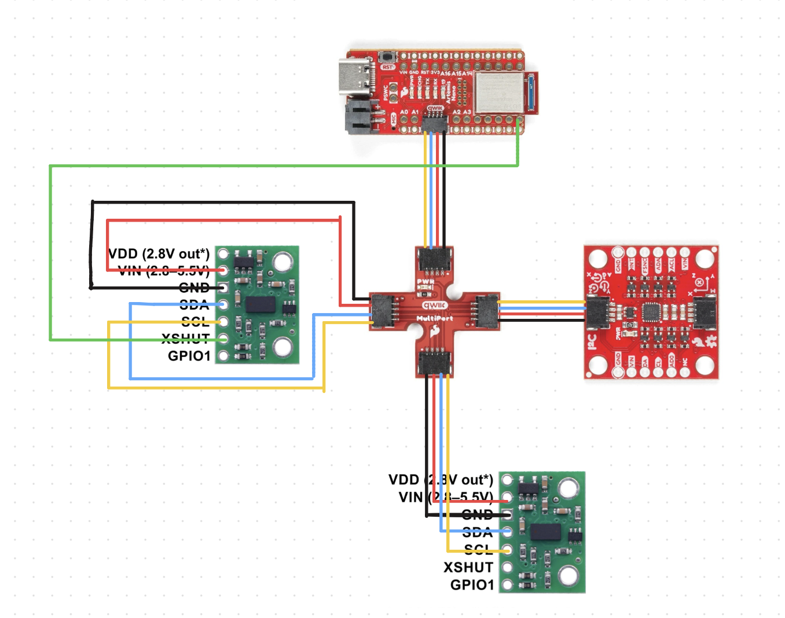
Task 1 Connection
After completing the soldering, I connected the Artemis, the two ToF sensors, and the IMU together using the Qwiic breakout board.
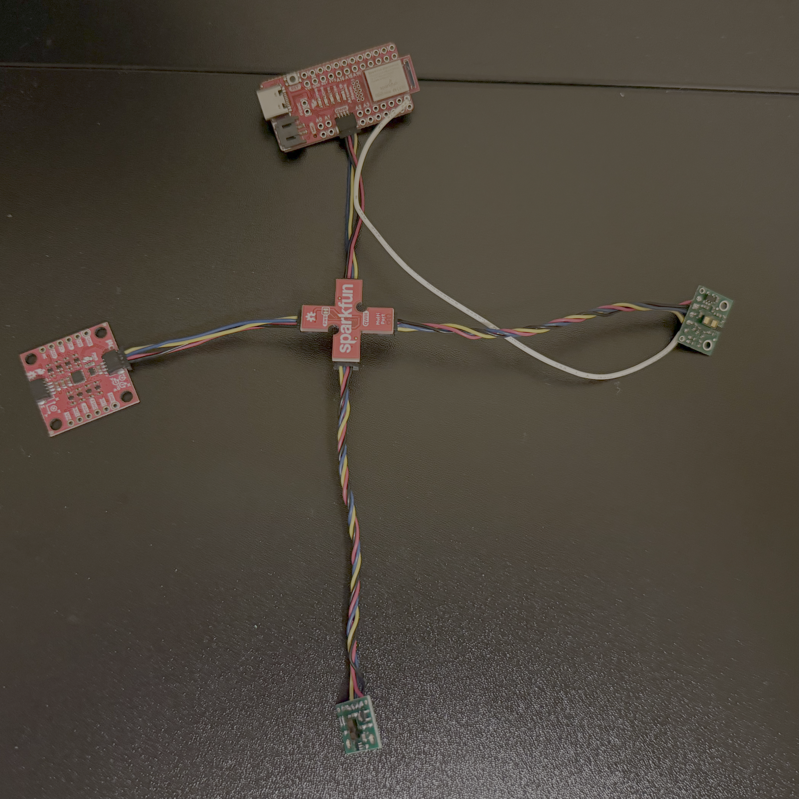
Task 2 I2C Scanning
I ran the example file and got the following output. The output address is 0x29, which does not match the expected 0x52 in Prelab. This is because the least significant bit of the 8-bit address in I2C is the read/write bit, while the Arduino library uses a 7-bit address. The original 0x52 is shifted one bit to the right to get 0x29.
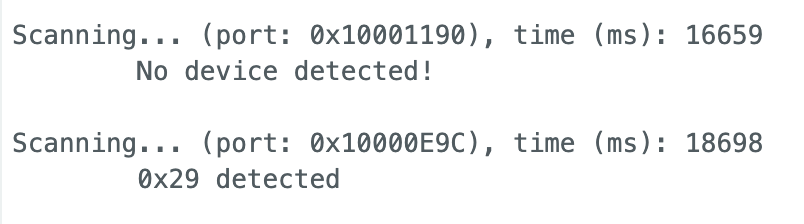
Task 3 Sensor Mode and Analysis
The ToF sensor has three modes: short, medium, and long. This is a screenshot I took from the ToF datasheet.
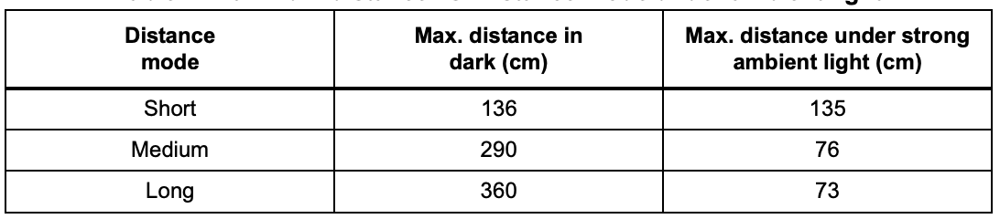
As can be seen, in a dark environment, i.e., without the influence of ambient light, the maximum range of the short mode is approximately 136mm, and the maximum range of the long mode is approximately 360mm. However, if exposed to strong light, the maximum range of the long mode drops sharply to 73mm, while the maximum range of the short mode remains largely unchanged. Considering minimizing the impact of ambient light, I ultimately chose the short mode.
Range
I fixed the Time-of-Flight (ToF) sensor and moved it from near to far towards the wall, calling the getRangeStatus function to record the sensor's status. The results are shown below, indicating that the sensor's status started to malfunction at a distance of 1270mm, which is consistent with the datasheet's maximum range of approximately 1.3 meters in short mode.
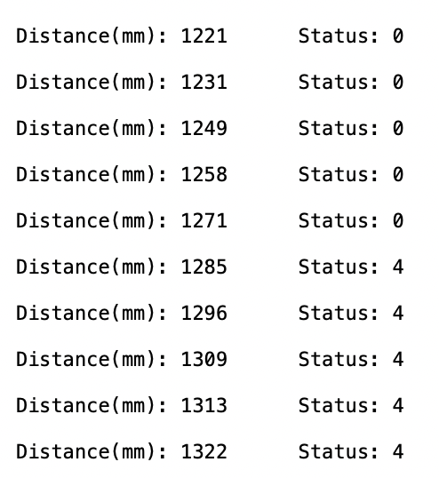
Accuracy and repeatability
To measure the accuracy and repeatability of the sensor, I selected three locations (150mm, 200mm, 300mm) for measurement. After extracting the data, I calculated the average error to represent the accuracy and the standard deviation to represent the repeatability. The results are shown in the figure. My conclusions are: (1) The accuracy improves when the sensor is further away from the object; (2) The repeatability of the sensor is good.
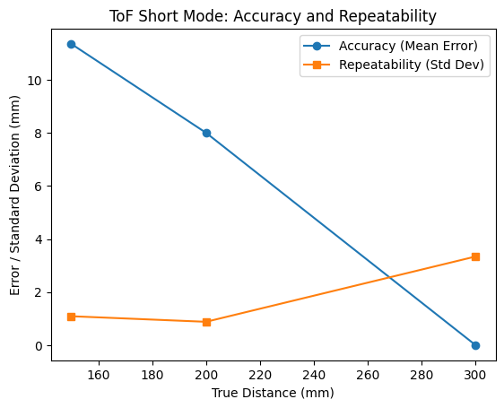
Ranging Time
I calculated the sensor's ranging time by extracting the interval between two data outputs. The result showed that the interval between the two measurements was 57ms, which corresponds to a frequency of 17.5Hz.
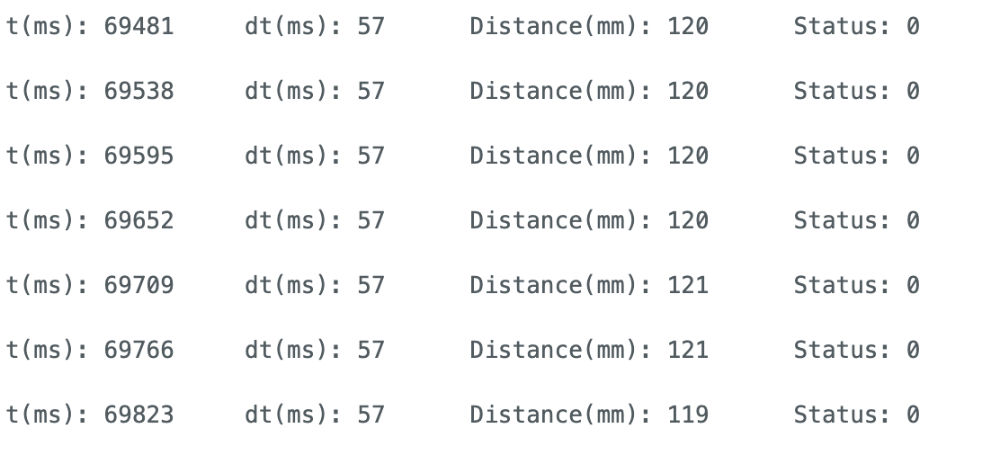
Task 4 Two ToF and IMU
Based on the method mentioned in the prelab section for enabling two ToF sensors to work in parallel, I chose to connect XSHUT to the A8 port of Artemis. Below is the implementation code and output results.
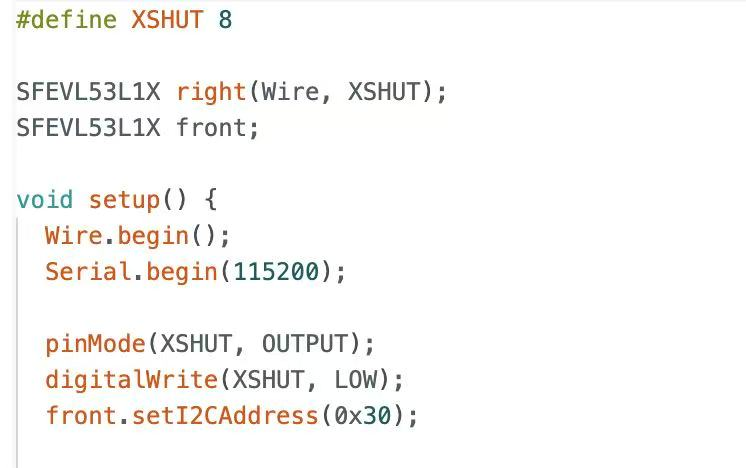
Task 5 ToF Speed
I waited until both ToF data were ready before outputting them. Calculations showed that the ToF data output frequency was approximately 10Hz, far lower than the Artemis clock frequency. Therefore, the main limiting factor was the ToF read speed.
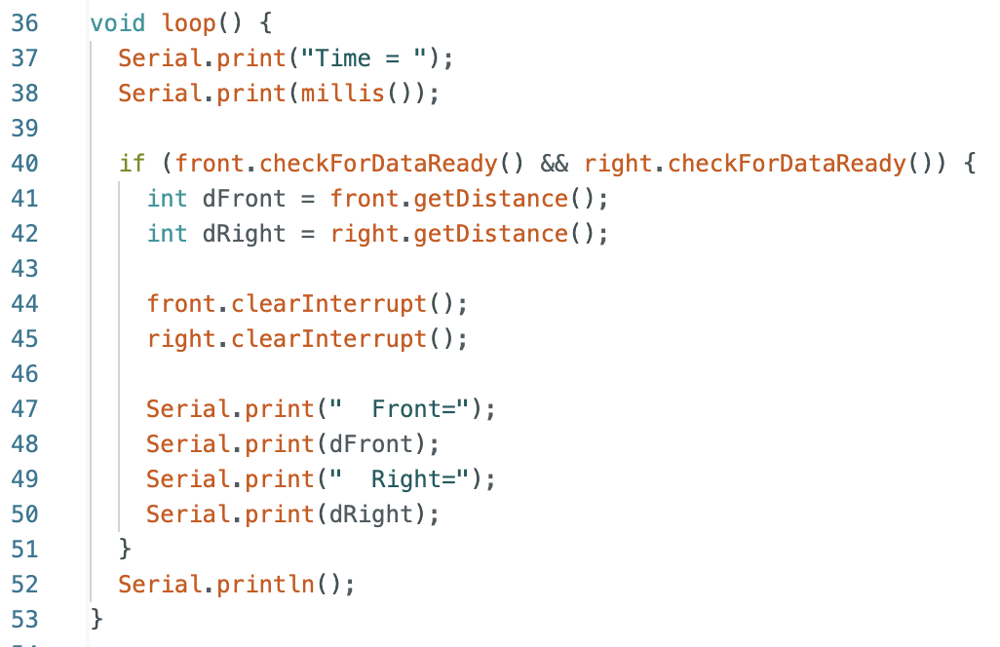
Task 6 Time vs Distance & IMU
I created a new command to read data from both the IMU and ToF simultaneously, and then transferred the data to my computer via Bluetooth. Below is the main code on my Arduino side.
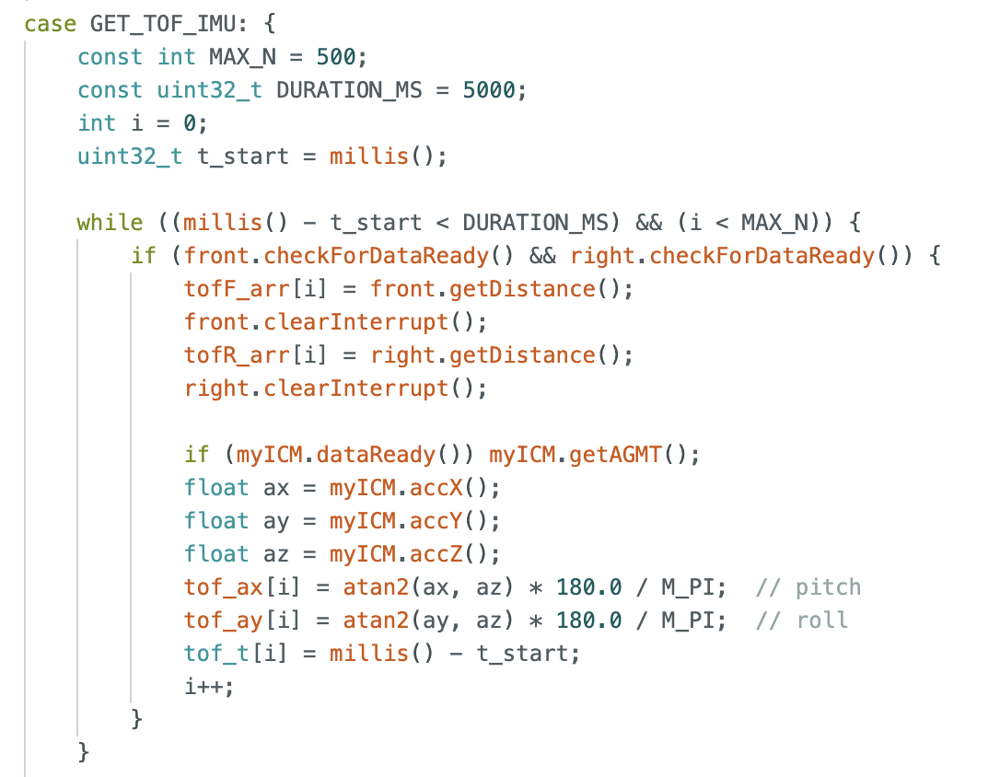
Below is the data I received from Jupyter. Each time, I can receive five data points: from beginning to end, time, distances measured by the two TOFs, and the IMU pitch and roll.
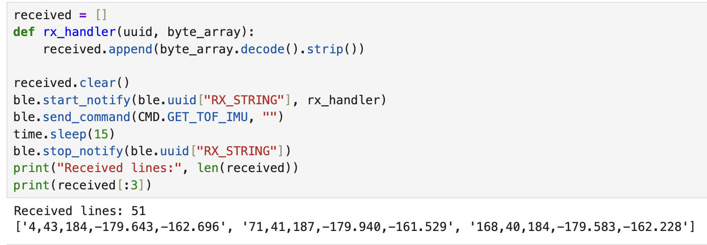
Below are the graphs I drew showing time versus distance and time versus IMU.
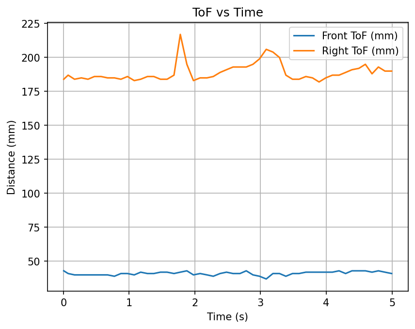
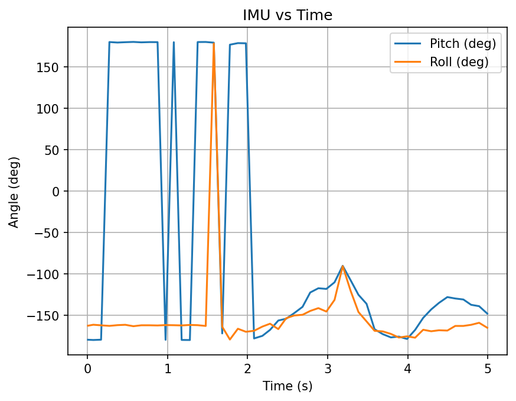
Task 7 Discussion on infrared transmission based sensors
Infrared ranging sensors mainly include Time-of-Flight (ToF) sensors and Infrared Reflection (IR) sensors.
ToF sensors measure distance based on the time it takes for light to be received.
Pros : High accuracy, long range, less affected by ambient light.
Cons: High cost.
IR sensors measure distance based on the intensity of reflected light.
Pros: Simple, low cost.
Cons: Short range, low accuracy, greatly affected by ambient light.
Task 8 Sensitivity of sensors to colors and textures
For color, I used three colors—orange, black, and white—at the same distance for ToF measurements. For texture, I used smooth white cardboard and a relatively rough towel. The measurement results are as follows. Due to the handheld sensor during the experiment, the results may not be entirely accurate, but they still demonstrate that ToF is quite robust to color and texture.
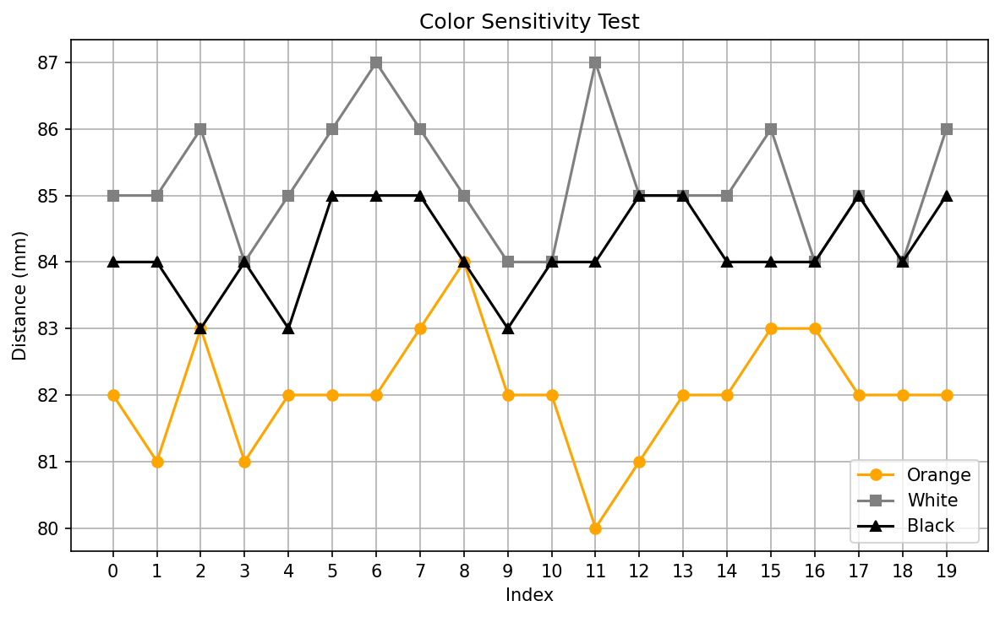
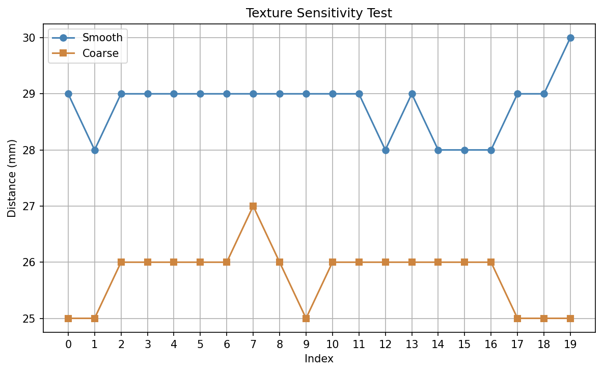
Reference
In the section on Two ToF sensors, I referenced Donghao Hong's approach. Additionally, I consulted Yueming Liu's page.